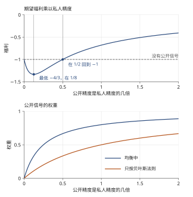

第 21 章 高阶信念、泡沫与协调
Abreu 与 Brunnermeier（2003）的泡沫（bubble）论文以 1990 年代后期的互联网泡沫开篇。他们写道，他们关于择时的结果似乎与流行的叙述相吻合，那些叙述讲的是对冲基金经理在那次泡沫里怎样行事。他们举的例子是 Stanley Druckenmiller，他管理 George Soros 的 Quantum Fund，规模 82 亿美元。有人问他，既然知道科技股估值偏高，为什么没有早些退出互联网股票，他回答说他认为这场聚会不会这么快散场：“我们以为是第八局，当时已是第九局。”面对不断扩大的亏损，他于 2000 年 4 月辞去了基金经理的职务（据 Abreu 与 Brunnermeier 的转述）。样本是一只基金的一位经理，期间是到 2000 年 4 月为止的互联网泡沫，来源是作者转述的一篇流行叙述，背后没有数据（本书的判断）。
作者论证，即使所有理性的套利者都知道价格过高，而且合起来可以纠正它，泡沫也可以持续。这引出一个问题（本书的判断）：如果许多专业人士都知道价格过高，并且合起来可以纠正它，价格为什么不动？1.6.3 节把他们的设定列为 EntreMed 的三个尚未检验（untested）的回答之一。1
21.1 高阶信念与共同知识
根模型（root model）只需要一阶知识（first-order knowledge），这是交易者只需要知道事实本身的默认（表 5.1）。12.9 节为公告（announcement）去掉了它；本节在一般情形下去掉它。
21.1.1 知道别人知道
在 Easley 与 Kleinberg 转述的 Chwe 的一个模型里，社交网络（social network）中的每个人，只要确信包括她自己在内总共至少有 个人会到场，就会参加抗议；她知道邻居的阈值，因为谈论异议有风险，所以不知道其他任何人的阈值，而且每个人都知道网络是什么样子（据 Easley 与 Kleinberg 的转述；工作论文版）。在一个四人网络里，每个人都知道有三个人的阈值是 3，足够发起一次抗议，但每个人都按兵不动，因为不确定别人是否知道这一点；把一条连接挪一下，这三个人之间这件事就成为共同知识（common knowledge）（工作论文版）。在两个网络里这三个人都知道这个事实，网络决定它是否成为共同知识（本书的判断）。
Aumann（1976）给出了定义：一个事件在两个人 1 和 2 之间是共同知识，是指两人都知道它，1 知道 2 知道它，2 知道 1 知道它，1 知道 2 知道 1 知道它，如此类推，比如两人都在事件现场，并且在那里看见彼此。他的模型还把信息到达每个人的方式当作共同知识，在他看来这不损失一般性，因为这些方式属于对一个状态的完整描述；这是关于模型结构的一个假设（本书的判断）。
他的例子表明，知道彼此的信念（belief）还不够。取四个等可能的状态 、、、。人 1 得知状态是 之一还是 之一；人 2 得知状态是 之一还是 。关注的事件是“ 或 ”，真实状态是 。这时 1 知道 2 对这个事件的后验概率（posterior probability）是 1/3，2 知道 1 的后验是 1/2，但 2 认为 1 可能不知道 2 的后验是什么，是 1/3 还是 1。人 1 的后验在每个状态下都是 1/2，所以它是共同知识；人 2 的后验在三个状态下是 1/3，在第四个状态下是 1，所以它不是（本书的判断）。两人各自知道对方的后验，两个后验仍然不同；用 Aumann 的话说，如果两人只是知道彼此的后验，他的结果就不成立。2
21.1.2 同意、交易与共同知识
Aumann 的定理说，如果两个人有相同的先验概率（prior probability），并且他们对某个事件的后验是共同知识，那么这两个后验必定相等，即使它们所依据的信息可能很不相同。它的结论涉及后验，没有说到交易，四状态的例子说明了它为什么要求后验是共同知识（本书的判断）。
Milgrom 与 Stokey（1982）的无交易定理（no-trade theorem）也依赖共同知识。他们写道，在任何自愿交易过程的理性预期（rational expectations）均衡（equilibrium）上，所有主体在交易时都共同知道，已经谈成的交易是可行的，也是各方都接受的，这足以排除仅仅基于私人信息（private information）差异的交易，前提是定理的其他假设成立，其中有严格的风险厌恶（risk aversion），以及在任何人了解任何信息之前没有交易能改进的配置（1.6.3 节和 4.4 节）。3
21.1.3 两种高阶信念
高阶信念（higher-order belief）是对别人所信的信念。本书把它分成两种（本书的判断）。推断型高阶信念（inference-based higher-order belief）出现在交易者从价格、订单或行动里读出别人的信息的时候，这需要对他们怎样根据所知行动有一个看法；它是理性预期（第 16 章）、做市商（market maker，第 17 章）和信息瀑布（information cascade，第 14 章）共有的成分。本书的地图把这一种算作去掉一阶知识，只限于表 5.1 列出这条默认的地方，即 Andrei 与 Cujean 的交易者（他们从价格读出别人的信息；数学框 5.2 和第 19 章）和本章；第 14、16、17 章里从价格、订单和行动学习，按表 5.1 给这些章的默认来算，即不从价格学习（no learning from prices）和无观察学习（no observational learning）（本书的判断）。收益型高阶信念（payoff-based higher-order belief）出现在交易者的收益取决于别人做什么的时候，如下面 Morris 与 Shin 的模型，地图把它算在一阶知识之下，见 12.9 节、第 19 章里 Pedersen 的短期交易者和本章。当要紧的结果本身由人们的行为决定时，如他们 1998 年模型里钉住汇率的崩溃，这样的模型也去掉了根模型的单一外生事实（single exogenous fact），即交易碰不到其真实值的那一个事实（本书的判断）。对这类模型，表 5.1 把这项放宽（relaxation）记在本章，那里卖出压力可以使泡沫破裂（21.2 节），第 11 章和第 12 章的协调（coordination）模型只按表 5.1 给这两章的默认来算。本章主要讨论第二种。
两种可以出现在同一个模型里（本书的判断）。在 Abreu 与 Brunnermeier 的模型里（21.2.2 节），足够多的别人卖出时泡沫破裂，这是收益型的依赖，作者还指出，交易者从泡沫仍然存在这一事实推断信息，这是推断型的依赖。4
21.1.4 公共信息的两把梯子
除了第 1、4、10 章的三步处理，即公开可得、已看到和已用上的信息（publicly available information、seen information、digested information），互知的各阶构成第二把梯子：从公开可得信息经人人已看到（information seen by everyone）的信息，到 阶互知（mutual knowledge of order k），再到共同知识（表 21.1）。“已看到”在第一把梯子上指定价的人，在第二把梯子上指每一个人（本书的判断）。
两把梯子回答不同的问题（本书的判断）：人人都已看到的消息，可以仍够不上共同知识，如 Aumann 的例子；消息也可以已是共同知识，而价格还没有正确地用上它。当人们只注意到所发布内容的一部分时，公开消息（public news）甚至可能没有被人人看到（本书的判断；第 10 章）。5
表 21.1 公共信息的两把梯子
| 步骤 | 含义 | 取决于它的结果 | 所在章节 |
|---|---|---|---|
| 公开可得信息（两把梯子都有） | 任何人都可以去查 | 无套利律（no-arbitrage law）只用到这一步 | 第 3 章 |
| 已看到的信息（第一把梯子） | 定价的人已经看到它 | 他们还没有看到的，是梯度的第一部分，即还没传开的信息（undiffused information） | 第 1 章和第 4 章 |
| 已用上的信息（第一把梯子） | 价格已经正确地用上了它 | 已看到减去已用上，是梯度的第二部分 | 第 1、4、10 章 |
| 人人已看到的信息（第二把梯子） | 1 阶互知 | 只要还剩一轮以上的交易，强泡沫就没有被排除；文献里的例子至少还剩三期（本书的判断） | 21.1.6 节和 21.2.1 节 |
| 阶互知（第二把梯子） | 每个人都知道每个人都知道，共 次 | 在 Morris、Postlewaite 与 Shin 的设定里， 阶排除从日期 起的强泡沫（据 Brunnermeier 的转述） | 21.1.6 节 |
| 共同知识（第二把梯子） | 同样的知识，没有尽头 | 同意定理（agreement theorem）和无交易定理假设了它；它的缺失推动全局博弈和 Abreu 与 Brunnermeier 的模型（本书的判断） | 21.1.1 节、21.1.2 节、21.1.5 节和 21.2.2 节 |
21.1.5 全局博弈与唯一均衡
Morris 与 Shin（1998）的货币模型是收益型的一例。基本面（fundamentals）状态 在 0 与 1 之间均匀分布，没有干预（intervention）时汇率是 ；政府把汇率钉在 ，它在每个状态下都至少是 。投机者可以发动攻击，做法是以成本 卖空一个单位的货币，政府放弃钉住时赚 ，政府守住时亏 ，不攻击则收益为零。政府的最佳做法是，只有当发动攻击的投机者的比例至少达到临界质量（critical mass） 时才放弃钉住。
当 低时，不论投机者怎么做，守住钉住汇率的代价都超过它的价值；当 高时，不攻击是占优的行动。这两端是占优区间（dominance region）。在两者之间，如果所有投机者都确切知道 ，“适于攻击”的区间就有多重均衡（multiple equilibria），因为信念会自我实现。
现在每个投机者看到一个信号，它从 上均匀抽取，给定 时各投机者之间独立，且 ，其中 和 是两个占优区间的界。他们的定理 1 说，存在唯一的 ，使得在任何均衡里，政府放弃钉住当且仅当 。这个定理同时依赖四个前提（本书的判断）：攻击是策略互补（strategic complementarity）的，攻击的收益随别人中发动攻击者的比例上升；两个占优区间都存在；先验是均匀的，没有公开信号（public signal；12.9 节）；私人噪声很小。模型里没有价格（本书的判断）；政府观察到发动攻击的比例和 。
作者写道，要紧的是有没有共同知识，他们把信息量（amount of information）本身放在一边。关于 有 阶知识，即每个人都知道每个人都知道它，共 次，当且仅当每个人的信号至少是 ；所以对任何固定的 ，总有某一阶不成立， 落在不稳定区间之外永远不是共同知识。
他们的定理 2 说，当 趋于零时， 解 ，边际投机者认为钉住汇率崩溃与守住的概率相等。Heinemann（2000）发表了对这个极限的更正。数学框 21.1 在一般情形下推导了这个极限，发现 进入其中，并且只有当 时它才与定理 2 一致（本书的推导）。在这个极限里， 的移动仍然会移动 ，所以论文关于它没有影响的说法不成立；资本管制仍有影响，所以论文关于基本面透明时它们似乎远没有那么有效的说法失去了依据；而它摘要里关于均衡取决于热钱（hot money）数量的论点成立，因为热钱通过 起作用，并且这个极限不依赖于 （本书的推导），所以共同知识很重要这一读法成立（本书的判断）。
在数学框 12.2 的正态信号版本里，相对于私人信号（private signal）足够精确的公开信号，会使阈值策略的多个均衡在公开信号的某些取值上重新出现（本书的推导；数学框 12.2）；恢复共同知识和选出好的均衡是两步（12.9 节），而没有两个占优区间，选择就无从起步（本书的判断）。Abreu 与 Brunnermeier 指出，全局博弈（global game）的方法不适用于他们的模型；他们的模型缺少策略互补，原因是只有一部分套利者能在崩盘（crash）之前卖出，而且交易者从泡沫的存续推断信息。6
21.1.6 有限阶知识与强泡沫
强泡沫（strong bubble，21.2.1 节）是人人都知道高于任何可能的股息流的价格。Brunnermeier（2001）转述了 Morris、Postlewaite 与 Shin（1995）的一个结果，设定取自 Allen、Morris 与 Postlewaite（1993），所有交易者都是风险中性（risk neutrality）的。在最终股息（在日期 支付）为零是互知的情形里，任何严格为正的价格都是强泡沫；如果这是 阶互知，就可以排除从 期起的强泡沫，所以只有当真实价值在 时不是 阶互知，泡沫才可能在 期或其后存在（据 Brunnermeier 的转述）。我们没有读过他们的论文。
两个陈述都在排除强泡沫，都没有表明存在强泡沫：直到剩余交易轮数的那一阶互知就足以排除它，不必达到共同知识，而在人人已看到的信息下，只要还剩一轮以上，强泡沫就没有被排除，因为定义本身已经让每个人都知道价格过高（本书的判断）。Allen、Morris 与 Postlewaite 给出了四个强泡沫的例子，它们都有至少三个交易者、至少还剩三期，价格也不完全揭示信息（据 Brunnermeier 的转述）。7
21.1.7 降低福利的公共信息
12.10 节给出了 Morris 与 Shin（2002）关于协调的结果，它是 4.7 节里公共信息（public information）可以降低福利的四种方式之一（工作论文版）；下面是它的三个条件，连同 Svensson（2006）的读法，两篇读的都是草稿。
第一个条件是，协调动机进入每个人的收益，而不进入社会福利。收益的第二项是猜测别人行动的零和博弈，即 Keynes 的选美博弈（beauty contest），福利是重新标度的平均收益，等于行动与基本面 的均方距离取负，所以它只取决于收益中与基本面有关的那一部分（工作论文版）。第二个是信息结构（information structure）：公开信号的实现值是共同知识；每个私人信号是 加上各主体之间独立的正态噪声，别人观察不到； 取自实数轴上的非正常均匀先验（improper uniform prior），公开信号里有正态噪声（工作论文版）。第三个是私人信息足够精确。设 为公开信号的精度，即其噪声方差的倒数， 为每个私人信号的精度， 为协调动机的权重，当且仅当 时，福利随 上升而下降（工作论文版）。当 时这个条件总是不成立，它的右边在 时最大，那里是 1/8，所以私人信号的精度必须是公开信号的八倍以上（工作论文版）。
在均衡里，主体给公开信号的噪声相对更大的权重，给私人信号的噪声相对更小的权重，Morris 与 Shin 把这归因于协调动机，而福利总是随私人信号的精度上升（工作论文版）；Svensson 的读法改变了对福利的判断，对行为的这个预测则保持原样（本书的判断）。
图 21.1 重画了 Svensson 图 2 的福利曲线， 固定为 1（工作论文版）。在 时， 的范围内福利下降，在 1/8 处最低，其后上升；没有公开信号时福利是 ，当 时回到这个水平，所以在 时，一旦 ，有公共信息就胜过没有（工作论文版）。在 1/8 与 1/2 之间，公开精度再高一点会使福利上升，但福利仍低于没有公开信号时的水平（本书的推导），所以边际上有帮助与胜过没有公共信息是两回事（本书的判断）。

Svensson 判断，央行信息的噪声极不可能是单个主体私人信息噪声的八倍以上，并由此得出结论：在合理的参数下，Morris 与 Shin 的模型里福利随透明度（transparency）上升（工作论文版）。这是他的判断；它拿央行的噪声与一个主体的私人噪声比，模型的条件也是这样比的，而交易者的私人信息怎样对应到市场里的 是另一个问题，把一个没有价格的模型搬到市场上，需要一个说明价格怎样形成的模型（本书的判断；12.10 节）。8
21.1.8 猜数博弈与思考步数
1.2.1 节给出了 Bühren 与 Frank 在国际象棋棋手中做的猜数博弈（工作论文版）和认知层级模型（cognitive hierarchy model）。这个博弈是收益型的，因为要赢，棋手必须猜别人会猜什么（本书的判断）。Camerer、Ho 与 Chong 写道，他们的泊松认知层级模型不要求理性是共同知识，所以它与无交易定理（他们称之为 Groucho Marx 定理）相矛盾，并预测即使对冲和旁观者的乐趣都不起作用，投机（speculation）也会发生。纳什解 0 对应于理性是共同知识，而向前想几步，是把对别人的推理截断在某个有限阶；思考步数数的是推理的轮数，互知的阶数数的是知道的层数，是两个不同的量（本书的判断）。9
21.2 泡沫与协调
Abreu 与 Brunnermeier（2003）的桥梁（bridge）模型，按本书的读法，改变了根模型的几条默认（本书的判断）。一个知晓窗口（awareness window）取代消息的一次性注入（one-time injection）；可以使泡沫破裂的卖出压力去掉了单一外生事实；永远不是共同知识的错价（mispricing）去掉了一阶知识；有上限的头寸去掉了无摩擦交易（frictionless trading）；从泡沫的存续推断信息的套利者连同其他几条一起去掉了不从价格学习。除表 5.1 为本章列出的放宽之外，套利者取风险中性，代替对数效用（log utility），作者写道，风险中性和固定交易成本（transaction cost）带来的全有或全无的头寸，对他们的主要结果并不是必需的，风险厌恶的套利者会逐渐离开市场；行为交易者（behavioral trader）认为价格将永远以 增长的固定信念，对他们来说代替了贝叶斯更新（Bayesian updating）（本书的判断）。
21.2.1 泡沫的三种定义
泡沫这个词在本章的来源里有三种定义，各有各的基准（本书的判断；表 21.2）。第一种里，主体付出的价格高于他们自己对未来股息的估值，因为他们相信以后能找到愿意付更多的买家，这就是 20.1.3 节的转售期权（resale option）。第二种是 Brunnermeier 转述自 Allen、Morris 与 Postlewaite（1993）的，当在某个日期和状态下价格高于每个主体对资产的边际估值时，就出现期望泡沫（expected bubble），基本面价值是排除任何转售的买入并持有策略的估值（据 Brunnermeier 的转述）。第三种里，如果在某个状态下所有主体都知道价格高于任何可能的股息流的价值，就出现强泡沫（据 Brunnermeier 的转述）。Abreu 与 Brunnermeier（2002）把最初的定义说成是所有交易者以概率一知道价格过高的情形（据 Abreu 与 Brunnermeier 的转述），并补充说，如 Allen、Morris 与 Postlewaite 所强调，这时泡沫的存在不可能是交易者之间共同知道的。强泡沫只有在每个交易者都有私人信息时才可能出现，交易者少于三个时不可能出现（据 Brunnermeier 的转述）。
Brunnermeier 还转述，Tirole（1982）证明，在动态理性预期均衡里，如果初始配置在事前是帕累托有效的，泡沫就不可能出现，所以中期帕累托无效是期望泡沫的第一个必要条件（据 Brunnermeier 的转述）；一个配置是帕累托有效的，是指没有任何交易能在不使另一人变差的情况下使某人变好，事前指交易者得到私人信息之前，中期指之后。20.1.5 节给出期望泡沫还需要的卖空约束（short-sale constraint）。
Abreu 与 Brunnermeier（2003）也把这个词当作工作定义来用：他们把持续到 之后的任何错价叫作泡沫，从这个时间起，已有足够多的套利者知道它，可以合起来纠正它（符号见 21.2.2 节）。10
表 21.2 泡沫的三种定义
| 定义 | 基准 | 谁知道价格过高 | 来源 |
|---|---|---|---|
| 转售期权 | 持有者自己对未来股息的估值 | 持有者付出高于它的价格，期待有买家付更多 | Scheinkman 与 Xiong（20.1.3 节） |
| 期望泡沫 | 每个主体对买入并持有、不转售的估值 | 每个主体对资产的估值都低于价格 | Allen、Morris 与 Postlewaite（据 Brunnermeier 的转述） |
| 强泡沫 | 任何可能的股息流的价值 | 所有主体都知道；它不可能是共同知识 | Allen、Morris 与 Postlewaite（据 Brunnermeier 和 Abreu 与 Brunnermeier 的转述） |
21.2.2 骑泡沫的套利者
Abreu 与 Brunnermeier（2003）的模型给开头的故事一个形式。从时刻 0 起，股价以大于利率 的速率 增长，。在随机时间 （服从速率为 的指数分布），价格不再有依据：从那时起，价格中只有 这一部分以基本面为基础， 是泡沫成分；这个 和这个 与 Morris 与 Shin 的无关。“非理性繁荣”的行为交易者相信“新经济范式”，认为价格将永远以 增长，他们使价格保持在基本面价值之上。理性的套利者依次知晓错价，从 到 的每个瞬间都有一批质量为 的新套利者，这一段就是知晓窗口，没有人知道自己是早知道的还是晚知道的。当他们的累计卖出超过 ，即行为交易者的吸收能力（absorption capacity）时，价格下跌 这一比例；如果卖出始终没有超过 ，泡沫在达到最大规模 时由于外生原因破裂。参数上的一个条件使套利者在知晓之前不会卖出（数学框 21.2）；例如当 很高或 很小时，作者写道，套利者会立即全部卖出。
延迟来自四个特征合在一起，参数要满足那个条件（本书的判断）。第一，错价不是共同知识：在破裂之前，甚至在质量为 的一批套利者之中，泡沫存在也从来不是共同知识；通常用来否定泡沫的逆向归纳，起点是一个属于共同知识的终止日期，配套论文补充说，在它的设定里逆向归纳没有“共同知道的起点”。第二，只有当足够多的套利者卖出时，卖出压力才会使泡沫破裂，而崩盘之前至多有 这一比例的套利者能离场，所以协调与竞争并存。第三，金融约束限制每个套利者的头寸，而他们的资源合在一起足以纠正价格。第四，价格不揭示 ：在作者对破裂的假设下，在别人的卖出越过 之前，套利者不会知道别人在卖出，作者补充说，一个对卖出压力严格单调的非随机价格会立刻揭示 。作者预期他们的主要结果在带噪声价格的更完整的模型里定性上仍成立，但没有证明（本书的判断；1.6.3 节）；配套论文把它的临界质量称为许多不确定性的简化形式，这些不确定性使人难以从价格推断每一个变量。
四个合在一起给出延迟，论文没有表明每一个都必需；按本书的读法，对称信息去掉第一个，没有第三个，一个套利者就可以独自纠正价格（本书的判断）。作者写道，在对称信息下，他们的动态模型里想先卖的愿望给出唯一的均衡，信息的不对称趋于零时，结果收敛到对称的结果，没有泡沫。
泡沫以两种方式之一破裂。在他们的命题 2 的条件下（数学框 21.2），唯一的交易均衡让每个套利者在知晓之后固定的时间 卖出，而对每一个 ，泡沫都恰在达到最大规模时由于外生原因破裂，套利者的卖出对它何时破裂没有影响。在相反的条件下，即他们的命题 3，在 知晓的套利者在 之后卖出，更早知晓的在 卖出，泡沫在它是崩盘前价格的 这一比例时破裂，适当的参数可以使它任意接近 。
配套论文的命题 2 说，错价在正质量的一批套利者之中永远不是共同知识，它的证明爬的是 21.1.4 节的梯子：在 ，每个人都知道错价，但只有第一个交易者知道每个人都知道；在 ，连最后知道的人都知道每个人都知道，但他们不知道每个人都知道每个人都知道；随着时间推移，互知的阶数不断升高，但永远到不了无穷。那篇论文里的套利者要付持有成本（holding cost，20.1.6 节）。
知道、行动和价格在这里分开了。在命题 3 的均衡里，当 时，已卖出者的比例等于知晓者的比例向后推迟 （本书的推导；数学框 21.2），价格一直沿着它的路径走，直到这个比例达到 ，然后立刻下跌，这是行动者所占比例的阶梯函数，属于 5.3 节里关于价格怎样对行动作出反应的规则之一，回答了表 19.3 里“策略性择时（strategic timing）”和“价格对行动的响应”两行（本书的判断）。对 EntreMed（1.6.3 节）这个尚未检验的候选，这四个特征就是要问的问题（本书的判断）。11
21.2.3 固定时间表上的知晓
作者从外部固定了模型里传播的一侧（本书的判断）：知晓在窗口内以均匀、确定的速率到来，没有口碑（word of mouth），也不会随知道者增多而变慢，在基本模型里唯一的随机性是起点 。他们补充说，也可以把依次知晓（sequential awareness）看作不对称信息、观点差异和其他因素的隐喻，这些因素在模型里表现为时间上的协调失误。Hong 与 Stein 的新闻观察者（newswatcher）也按固定的时间表学习，每条消息每期传到多一个群体，直到所有人都得到它（20.2.1 节；工作论文版）。两个时间表都不是根模型的 S 曲线（S-curve），这两座桥梁各自只走了一半（本书的判断）。
与根模型相比，均匀窗口是关掉口碑，再加上一个在窗口内上升的外部来源（external source）（本书的推导；数学框 21.3）。闭式解还依赖均匀窗口加指数起点的一个特征：关于 的后验，当 时，它的形状不依赖于套利者什么时候知道（本书的推导；数学框 21.2），换一种知晓过程，这一步就需要重做（本书的判断）。
同步带来的延迟在有口碑时是否仍然存在，如在 Bass 模型（Bass model）或 SI 传染病模型里那样，是本书开放问题（open problem）的一种形式（1.7 节；第 19 章），论文没有处理它；数学框 21.3 陈述了这个问题，没有给出答案；它给出配套论文关于递减吸收能力的条件，以及这个条件在 S 曲线上的一个类比，后者不在他们的证明范围内（本书的推导）。12
21.2.4 延迟与它的边界
Abreu 与 Brunnermeier（2002）的命题 3 给出他们模型的比较静态：知晓窗口 越长、初始吸收能力 越大、持有成本 越高，错价持续得越久；到达速率 越高、错价 越大，持续得越短。当错价超过由套利者之间观点的分散程度和其他参数设定的界时，套利者毫不延迟地按自己的信息行动。他们的主要结果是，同步风险（synchronization risk）加上持有成本，通常使套利者推迟按自己的信息行动；他们最终确实会交易，但套利可能被大幅推迟。
两篇论文都没有测量窗口、吸收能力或时间限制，也没有给出参数值，所以这些论文没有给出办法，从测得的量估计延迟有多长，只能检验有顺序的比较，如那条边界（本书的判断）。一个候选的检验，是本书的，尚未检验：把错价的大小与它明确的持有成本相比，比较比值大和比值小的情形，其他条件相同；命题 3 的比较静态表明，比值大时纠正紧跟在知晓之后，比值小时远远落在它后面，这个比较不给出幅度，而分析师覆盖（analyst coverage）首次出现、卖空者（short seller）报告或搜索量的时点，或许可以代表知晓传播得有多快（本书的判断）。13
21.2.5 沉默、触发与雪崩
Lee（1998）给出了第二种方式，说明知道不一定推动价格。交易是依次进行的：每一轮来一个新的主体，而先前到来的仍然活跃，可以重新调整头寸。做市商报出价格，并按这个价格充当任何订单的对手方，每一轮的价格由订单历史里的全部信息设定。交易成本可能使许多交易者无法披露自己的私人信息，所以隐藏的信息不断积累，可能由一个小小的触发事件释放出来，出现高波动，而没有伴随的事件（16.6 节和 20.1.9 节）。Lee 的信息瀑布与 Bikhchandani、Hirshleifer 与 Welch 的不同，可以是部分的：公共信念（public belief）一旦偏向一边，信号温和的交易者就留在场外，他们的信息以沉默的形式隐藏起来（本书的判断）。按 Lee 的定义，信息雪崩（information avalanche）发生在先前到来但还没有交易的主体下单的时候。交易者只在第一次交易时付一次交易成本，不论订单多大，这去掉了无摩擦交易；每个主体根据自己的信息和先前主体的决策历史来决策，整个价格历史都在他的信息集（information set）里，所以这个模型也去掉了无观察学习和不从价格学习（本书的判断）。
Lee 描述崩盘经过的四个阶段：繁荣、狂喜（euphoria）、触发和恐慌，狂喜对应信息瀑布，恐慌对应雪崩。在狂喜阶段，带信号 H 或 L 的主体陆续到来，不下任何订单。在触发阶段，一个带信号 R 的主体下了一张卖单，在恐慌阶段，狂喜期间到来的主体下单；如果他们大多是带信号 L 的卖出者，就发生崩盘。这个例子假设在两个状态下 H 和 L 都常见，R 都罕见，Lee 把他对这四个阶段的论证称为启发式的。
Lee 写道，雪崩之后价格很可能更接近正确的价格；这种纠正并不完美，因为即使在长期，价格也以严格为正的概率没有反映市场里的全部信息。Lee 自己加了一条保留：模型在雪崩期间让可能很大数量的交易在一期里按同一个价格成交，交易成本不变，而现实里价格可能在一部分订单之后就调整，买卖价差（bid–ask spread）也可能扩大，所以价格的变动可能比模型预测的小。Brunnermeier 同样写道，雪崩取决于做市商在一轮交易内无法调整报价。
Abreu 与 Brunnermeier 的模型和 Lee 的模型给出两种让人们知道了而价格不动的机制（本书的判断）：一种是策略性择时，因为错价不是共同知识，套利者必须一起卖，而每个人都想先卖，于是等待；另一种是摩擦阈值（friction threshold），温和的消息抵不过交易费用（trading costs），尽管价格会按订单历史调整。两者在表 19.3 里都位于知道与行动之间，与信念阈值（belief threshold，第 11 章）、等别人先动（waiting to learn），即向先行动的人学习（第 14 章），和注意周期（attention cycle，19.3.3 节）并列。14
21.2.6 并排的泡沫模型
表 21.3 把本书的各个泡沫模型并排列出（本书的判断）。
规模与形状是两个不同的问题，表 21.3 的第四列给出每个模型里是什么设定或限制了它（本书的判断）。Abreu 与 Brunnermeier 没有测量 背后的量（本书的判断），本书没有印出 Scheinkman 与 Xiong 的规模的任何数字，这些模型也没有一个从与价格分开测得的量推出泡沫的规模（本书的判断）。15
表 21.3 泡沫模型及其所解释的现象
| 模型 | 改变了什么 | 解释什么 | 什么设定或限制规模 | 章 |
|---|---|---|---|---|
| Abreu 与 Brunnermeier | 固定窗口上的知晓；错价永远不是共同知识；带着想先卖的愿望的协调；有上限的头寸；不揭示 的价格；满足作者条件的参数 | 为什么足够多的人知道之后纠正还要等 | 命题 2 下是 ；命题 3 下是由 、、 和 设定的 ；论文里都没有测量 | 21 |
| Scheinkman 与 Xiong | 过度自信（overconfidence）造成的分歧；没有卖空交易 | 转售期权，伴随大量交易和高波动 | 模型里的一个规模，这里没有印出数字 | 20 |
| Pedersen | 网络上平均的看法 | 泡沫随时间的形状 | 没有短期交易者时，以最极端的看法为界，它是一个输入（本书的推导） | 19 |
| Biais 等；Cong、Li 与 Wang（工作论文版） | 没有现金流；价值取决于未来的价格或采纳 | 价格水平 | 信念，其中有太阳黑子（sunspot），或采纳均衡 | 22 |
21.2.7 四类崩盘
Brunnermeier 把崩盘的理论模型分成四类：流动性短缺（liquidity shortage）、多重均衡与太阳黑子、泡沫破裂，以及成块的信息聚合（lumpy information aggregation）。他写道，即使所有主体都理性行事，每一类也都能解释崩盘，它们的区别在于崩盘之后的价格路径，可能是一次纠正，市场长期处于低位，也可能是立刻反弹。纯粹由流动性短缺推动的崩盘是暂时的，所以他预期会很快恢复。太阳黑子可能预示从高价均衡转向低价均衡。多重均衡之间的移动不一定伴随太阳黑子，他补充说，Gennotte 与 Leland（1990）给出了没有太阳黑子的崩盘：当参数值略有变化时，高价均衡消失，经济跳到低价均衡，即使供给回到原来的水平，价格也可以停在那里（据 Brunnermeier 的转述）；他怀疑静态设定里的这种跳跃在完全动态的模型里是否会出现。在泡沫破裂里，价格超过基本面价值，所有参与者都知道，但这不是共同知识；崩盘是一次纠正，他预期纠正之后不会反弹。在成块的信息聚合下，经济可能处于部分瀑布（partial cascade）之中，直到一个小事件把它打破；这样的崩盘常常跟在价格的稳步上升之后，并纠正错价，所以他预期不会很快恢复。
本书把“崩盘之后价格反弹吗？”作为第一个检验（本书的判断）。快速反弹指向流动性短缺，不过 Brunnermeier 的综述没有给多重均衡那一类写出路径，所以反弹并不排除那一类；价格一直低迷指向其他几类之一，它们还需要进一步的检验：先出现的是不是一个可以识别的太阳黑子或条件的一次小变化，以及高估是否在事前就是互知的，后者把泡沫破裂与成块的信息聚合区分开，因为两者之前都可能有上涨（本书的判断）。这个检验不能把一切都分开。Abreu 与 Brunnermeier 用随机的暂时价格下跌扩展了他们的模型，这些下跌可能来自行为交易者的情绪变化，以说明一次大幅下跌怎样可以变成崩盘或反弹，他们称这是一个简单而高度程式化的模型；如果泡沫熬过下一轮，行为交易者就恢复信心。在他们的命题 5 的均衡里（他们指出，它不一定是泡沫最早破裂的那个），一次没有跟着崩盘的价格下跌会带来反弹，使泡沫暂时加强，所以先跌后恢复在泡沫模型里也可以出现（本书的判断）。16
表 21.4 四类崩盘
| 类别 | 机制 | 崩盘后的价格 | 来源 |
|---|---|---|---|
| 流动性短缺 | 一段时间里承接另一方的容量太小 | Brunnermeier 预期很快恢复 | Brunnermeier |
| 多重均衡与太阳黑子 | 转向低价均衡，由太阳黑子预示，或如 Gennotte 与 Leland 的模型里由参数的一个小变化引发 | 综述里没有写出路径；在 Gennotte 与 Leland 的静态模型里，供给回升后价格仍可以停在低位，他怀疑动态模型是否会给出这样的跳跃 | Brunnermeier；Gennotte 与 Leland（据 Brunnermeier 的转述） |
| 泡沫破裂 | 高估是互知的，但不到共同知识 | 一次纠正；他预期不会反弹 | Brunnermeier；21.2.2 节（本书的判断） |
| 成块的信息聚合 | 一个小事件打破部分瀑布，常在稳步上涨之后 | 一次纠正；他预期不会很快恢复 | Brunnermeier；Lee（21.2.5 节） |
21.2.8 GameStop 上的协调
11.6 节给出了 Lucchini 等对 Reddit 上 GameStop 逼空这一单一事件的研究，以及对它的四种读法。作者把用户的承诺（commitment）定义为一种展示出来的证明，证明该用户在这项资产上有金融利害关系，并指出论坛上有一条广泛共享的规范，即在发起关于投资的讨论时要提供自己持仓的证明。公开展示持仓，把谁已经买入从私人信息变成了任何读论坛的人都能看到的事实，向共同知识迈了一步，而因为别人买得越多，每个买家的收益就越大（11.6 节），承诺帖（commitment post）可能起到协调买入的作用；论文既没有为协调建模，也没有检验它（本书的判断；11.6 节）。17
21.2.9 协调卖者与说服持有者
公共信息可以用两种方式纠正错价，前提不同（本书的判断）。它可以协调那些会卖出的人；公告成为套利者之间的协调工具（coordination device），只限于套利限制（limits to arbitrage）不太紧的地方（本书的判断；12.9 节）。或者它可以说服持有者：Ljungqvist 与 Qian 的卖空者发布报告之后，作者没有看到卖空增加，目标公司面临的卖空约束相当严厉，在他们的读法里，这些报告看来传到了目标公司的股东那里，这些股东的卖出带来了价格下跌（工作论文版；1.6.3 节、12.9 节和 20.1.11 节）。在卖空受到严格约束的地方，纠正高估靠说服持有者卖出；在卖空不受约束的地方，协调卖空者是第二条途径（本书的判断）。18
21.3 本章引用的实证证据
- 测量。 Lucchini 等的 Reddit 数据，读的是 arXiv 预印本，以及 1.2.1 节的 ChessBase 数据，本章只指向它们。
- 只从转述里知道的。 Abreu 与 Brunnermeier 对 Druckenmiller 的叙述，是他们转述的一篇流行叙述（据 Abreu 与 Brunnermeier 的转述）；Chwe 的模型（据 Easley 与 Kleinberg 的转述；工作论文版）；Morris、Postlewaite 与 Shin，Allen、Morris 与 Postlewaite，以及 Gennotte 与 Leland 的结果（据 Brunnermeier 的转述）；Heinemann 的评论，没有读，只在摘要的层面引用。
- 模型、论证与计算。 其余一切，其中 Morris 与 Shin（2002）、Svensson、Biais 等、Cong、Li 与 Wang、Hong 与 Stein 以及 Ljungqvist 与 Qian 读的是草稿或工作论文（工作论文版）；图 21.1 是本书的计算，数学框 21.1 里更正后的极限是本书的推导。本书没有用自己的数据检验本章的任何机制（本书的判断）。
21.4 交易者的自查清单
这些问题没有一个说明该买什么或卖什么，好的回答也不会使一笔交易变得安全（本书的判断）。
- 谁知道别人知道？ 核对：人人已看到的消息可能不到共同知识，如 Aumann 的例子，一个需要许多人同时行动的结果，取决于他们对彼此所知的了解（本书的判断；21.1.1 节和 21.1.4 节）。
- 均衡只有一个吗？ 核对：在 Morris 与 Shin（1998）的货币模型里，攻击是策略互补，两个占优区间都存在，先验均匀且没有公开信号，私人噪声小且相互独立，结果取决于基本面是否低于唯一的阈值（21.1.5 节）；在正态版本里，相对于私人信号足够精确的公开信号，会使几个阈值均衡在公开信号的某些取值上重新出现（本书的推导；数学框 12.2）。
- 知道的人需要彼此吗？ 核对：在 Abreu 与 Brunnermeier（2003）的模型里，知晓以固定、均匀的速率从外部到来，一个套利者接一个套利者，参数满足作者的条件，当错价不是共同知识、必须有一个临界质量的人卖出而只有一部分人能先卖、头寸有上限、价格不揭示错价何时开始，这四个一起成立时，纠正要等待；在他们 2002 年的模型里，错价的大小与它的持有成本之比，是对那条边界的一个尚未检验的候选检验（本书的判断；21.2.2 节至 21.2.4 节）。
- 沉默在隐藏信息吗？ 核对：在 Lee 的启发式例子里，交易费用固定，交易依次进行，做市商在一轮之内保持一个价格，信号在两个状态下都罕见，温和的消息可能留在价格之外，在罕见的信号出现之后一下子出来，不过 Lee 写道，真实的雪崩可能使价格动得更少（21.2.5 节）。
- 价格回来了吗？ 核对：按 Brunnermeier 的分类，快速反弹指向流动性短缺，不过他的综述没有给多重均衡那一类写出路径，价格一直低迷则指向其他几类之一，而一次没有跟着崩盘的暂时下跌，在 Abreu 与 Brunnermeier 的程式化扩展的一个均衡里也会反弹（本书的判断；21.2.7 节）。
21.5 小结
- 共同知识是指每个人都知道，每个人都知道每个人都知道，如此无穷类推；在 Aumann 带共同先验（common prior）的四状态例子里，两个各自知道对方后验的人，仍然持有不同的后验（21.1.1 节）。
- 互知的各阶，从公开可得信息经人人已看到的信息和 阶互知到共同知识，构成一把梯子，与公开可得、已看到和已用上的信息那把梯子分开，两把梯子回答不同的问题（本书的判断；21.1.4 节）。
- 在 Morris 与 Shin（1998）的货币模型里，有策略互补、两个占优区间、没有公开信号的均匀先验和小的独立私人噪声，当噪声消失时，唯一均衡的阈值取决于临界质量 ，也就取决于热钱，并且只有在 处才与论文的定理 2 一致（本书的推导；21.1.5 节和数学框 21.1）。
- 在 Morris 与 Shin（2002）的模型里，协调动机对社会是零和的，公开信号的实现值是共同知识，私人信号是独立的正态信号，先验是非正常均匀先验，公开噪声是正态的，更精确的公共信息降低福利，当且仅当 ，右边至多为 1/8，Svensson 认为这在合理的参数下不太可能（工作论文版）；模型没有价格，交易者的私人信息怎样对应到市场里的 是另一个问题（本书的判断；21.1.7 节和图 21.1）。
- 在 Abreu 与 Brunnermeier（2003）的模型里，知晓以固定、均匀的速率从外部到来，参数满足作者的条件，错价永远不是共同知识，一个临界质量的人必须卖出而只有一部分人能先卖，头寸有上限，价格不揭示错价何时开始，这时泡沫可以在足够多的套利者知道它、可以纠正它之后仍然持续（21.2.2 节）；延迟在有口碑时是否还存在，仍是开放问题（本书的判断；21.2.3 节）。
- 在 Lee（1998）的启发式例子里，交易费用固定，交易依次进行，做市商在一轮之内保持一个价格，信号在两个状态下都罕见，温和的信息可以作为沉默隐藏起来，在罕见的信号之后于一场雪崩里一下子出来，Lee 写道，这场雪崩在现实里可能更小（21.2.5 节）。
- 按 Brunnermeier 的四类崩盘，快速反弹指向流动性短缺，价格一直低迷则指向其他几类之一，这是第一个检验，它不能把一切分开，因为他的综述没有给多重均衡那一类写出路径，而且在 Abreu 与 Brunnermeier 的程式化模型的一个均衡里，一次暂时的下跌也可以反弹（本书的判断；21.2.7 节）。
21.6 写给量化读者的数学框
数学框 21.1 Morris–Shin 极限的更正
Morris 与 Shin（1998）的定理 2 说，当 时， 解 ；按他们的直觉，边际投机者认为钉住汇率崩溃与守住的概率相等，所以攻击的期望收益是 ，与成本 相比。其余是本书的推导。在唯一的均衡里，每个投机者在低于切换信号 时发动攻击，所以当信号在 上均匀分布时，在 处发动攻击的比例，随 从 走到 ，从 1 线性降到 0。边际投机者看到的是 ，他认为 在同一个区间上均匀分布，所以他对发动攻击的比例的信念在 上均匀。当发动攻击的比例至少为 时，政府放弃钉住，无差异时放弃它，而 在取正的地方是连续的，所以当 时，边际投机者预期钉住汇率以概率 崩溃。极限里的无差异给出 只有当 时，这才是定理 2 的方程。热钱改变 ，并通过它改变 ，而 仍然消去。取 、、， 在 0.2 以下为零，在 0.2 以上为 ：极限给出 ，所以 ，定理 2 给的是 0.8（本书的推导）。19
数学框 21.2 Abreu–Brunnermeier 的闭式解
在 知晓的套利者持有后验 ，它是关于起点 的；当 时，它对 和 的依赖只通过 ，所以它的形状不依赖于她什么时候知道（本书的推导）。条件 使套利者在知晓之前不会卖出。命题 2 在 时适用，其中 ， 是泡沫由于外生原因破裂的最晚时间，即它达到 的时候。在相反的不等式下，命题 3 给出 和 。当基本面价值在 等于价格，此后以 增长时，，。
其余是本书的推导。在命题 3 的均衡里，对 ，一旦 超过 ，到时间 已卖出者的比例是 ，所以泡沫在 破裂，即知晓达到临界质量之后 ，此时它是 。当 很小时，：超额增长率乘以知晓达到临界质量所花的时间。配套论文的延迟需要一个大小为 的错价和一个持有成本 ，满足 ，没有它，套利者总是在知晓之后立刻交易。它的主要结果可以推广到任何下降得比 慢的递减吸收能力（数学框 21.3）。两篇论文都没有给出参数值，本框也不计算任何数值。20
数学框 21.3 用传染代替均匀知晓
除了下面 Abreu 与 Brunnermeier 的陈述，本框是本书的推导，它陈述一个问题而不回答它。设 是在时间 已知晓的套利者的比例。均匀窗口 是没有口碑、外部来源为 的根模型，这个来源在窗口内上升，在窗口末端发散，因为 等于这个来源乘以 。一个恒定的外部来源 ，与 Morris 与 Shin 的精度无关，给出的则是 ，它只在形状上与窗口相似。在它之下，关于 的后验依赖于 本身，对称的触发策略可能不再能直接推出（本书的判断）；有口碑时，套利者的知晓时间是相关的，论文的分析不能直接推广（本书的判断）。Abreu 与 Brunnermeier（2002）陈述，只要在所有时间都有 ，他们的主要结果就推广到任何递减的吸收能力。把 读作知晓的速度，在 S 曲线上的类比是 ，它在曲线的两端附近可能不成立，那里 很小（本书的类比）；他们的证明只涵盖均匀窗口。延迟在那里是否仍然存在，就是那个开放问题。21
本章文献
本章引用的文献。所读版本不是期刊版的，条目里写明读的是哪个版本；尾注里的页码按所读的版本。
- Abreu, D., and M. K. Brunnermeier (2002). Synchronization Risk and Delayed Arbitrage. Journal of Financial Economics 66(2–3): 341–360.
- Abreu, D., and M. K. Brunnermeier (2003). Bubbles and Crashes. Econometrica 71(1): 173–204.
- Allen, F., S. Morris and A. Postlewaite (1993). Finite Bubbles with Short Sale Constraints and Asymmetric Information. Journal of Economic Theory 61: 206–229. 没有读；按 Brunnermeier（2001）的转述介绍。
- Aumann, R. J. (1976). Agreeing to Disagree. Annals of Statistics 4(6): 1236–1239.
- Biais, B., C. Bisière, M. Bouvard, C. Casamatta and A. J. Menkveld (2023). Equilibrium Bitcoin Pricing. Journal of Finance 78(2). 所读为录用稿，即 2022 年 2 月的 TSE Working Paper 973；没有核对期刊版。
- Bikhchandani, S., D. Hirshleifer and I. Welch (1992). A Theory of Fads, Fashion, Custom, and Cultural Change as Informational Cascades. Journal of Political Economy 100(5): 992–1026.
- Brunnermeier, M. K. (2001). Asset Pricing under Asymmetric Information: Bubbles, Crashes, Technical Analysis, and Herding. Oxford University Press.
- Bühren, C., and B. Frank (2012). Chess Players’ Performance Beyond 64 Squares: A Case Study on the Limitations of Cognitive Abilities Transfer. Talent Development and Excellence 4: 157–169，按检索所得；没有见过期刊版。所读为 MAGKS Joint Discussion Paper in Economics 19-2010。
- Camerer, C. F., T.-H. Ho and J.-K. Chong (2004). A Cognitive Hierarchy Model of Games. Quarterly Journal of Economics 119(3): 861–898.
- Chwe, M. S.-Y. (1999). Structure and Strategy in Collective Action. American Journal of Sociology 105(1): 128–156. 没有读；按 Easley 与 Kleinberg（2010）的转述介绍。
- Chwe, M. S.-Y. (2000). Communication and Coordination in Social Networks. Review of Economic Studies 67: 1–16. 没有读；按 Easley 与 Kleinberg（2010）的转述介绍。
- Cong, L. W., Y. Li and N. Wang (2021). Tokenomics: Dynamic Adoption and Valuation. Review of Financial Studies 34(3): 1105–1155. 所读为 2020 年 5 月的 NBER 工作论文 27222；没有核对期刊版。
- Easley, D., and J. Kleinberg (2010). Networks, Crowds, and Markets: Reasoning about a Highly Connected World. Cambridge University Press. 所读为作者 2010 年 6 月 10 日的草稿；没有核对印刷本。
- Gennotte, G., and H. Leland (1990). Market Liquidity, Hedging, and Crashes. American Economic Review 80(5): 999–1021. 没有读；按 Brunnermeier（2001）的转述介绍。
- Heinemann, F. (2000). Unique Equilibrium in a Model of Self-Fulfilling Currency Attacks: Comment. American Economic Review 90(1): 316–318. 没有读；只在摘要的层面引用。
- Hong, H., and J. C. Stein (1999). A Unified Theory of Underreaction, Momentum Trading, and Overreaction in Asset Markets. Journal of Finance 54(6): 2143–2184. 所读为 1997 年 12 月的 NBER 工作论文 6324；没有核对期刊版。
- Lee, I. H. (1998). Market Crashes and Informational Avalanches. Review of Economic Studies 65(4): 741–759.
- Ljungqvist, A., and W. Qian (2016). How Constraining Are Limits to Arbitrage? Review of Financial Studies 29(8). 所读为 2014 年 1 月的 NBER 工作论文 19834，副标题为“Evidence from a Recent Financial Innovation”；没有核对期刊版。
- Lucchini, L., L. M. Aiello, L. Alessandretti, G. De Francisci Morales, M. Starnini and A. Baronchelli (2022). From Reddit to Wall Street: The Role of Committed Minorities in Financial Collective Action. Royal Society Open Science 9(4): 211488. 所读为 arXiv 预印本 2107.07361v2；没有核对期刊版。
- Milgrom, P., and N. Stokey (1982). Information, Trade and Common Knowledge. Journal of Economic Theory 26(1): 17–27.
- Morris, S., A. Postlewaite and H. S. Shin (1995). Depth of Knowledge and the Effect of Higher Order Uncertainty. Economic Theory 6: 453–467. 没有读；按 Brunnermeier（2001）的转述介绍。
- Morris, S., and H. S. Shin (1998). Unique Equilibrium in a Model of Self-Fulfilling Currency Attacks. American Economic Review 88(3): 587–597.
- Morris, S., and H. S. Shin (2002). Social Value of Public Information. American Economic Review 92(5). 所读为 2001 年 7 月的 Cowles Foundation Discussion Paper 1312，题为“The CNBC Effect: Welfare Effects of Public Information”；没有核对期刊版。
- Pedersen, L. H. (2022). Game On: Social Networks and Markets. Journal of Financial Economics 146: 1097–1119.
- Scheinkman, J. A., and W. Xiong (2003). Overconfidence and Speculative Bubbles. Journal of Political Economy 111(6): 1183–1219.
- Svensson, L. E. O. (2006). Social Value of Public Information: Comment: Morris and Shin (2002) Is Actually Pro-Transparency, Not Con. American Economic Review 96(1): 448–452. 所读为作者 2005 年 8 月的草稿；没有核对期刊版。
- Tirole, J. (1982). On the Possibility of Speculation under Rational Expectations. Econometrica 50: 1163–1182. 没有读；按 Brunnermeier（2001）的转述介绍。
注释
1. Abreu 与 Brunnermeier（2003），期刊版：流行叙述和 Druckenmiller 在 §1，第 175 页；论文的论断在 §7，第 197 页。1.6.3 节给出他们的设定的来源。
2. Easley 与 Kleinberg（2010），2010 年 6 月 10 日的草稿：Chwe 的模型在 §19.6，第 584 页；两个网络和已知的网络在第 585 页。Aumann（1976），期刊版：共同知识、同时在场和互相告知的后验在第 1236 页；四状态例子和作为共同知识的划分在第 1237 页。本书对这个例子的核对：人 1 的两个块 和 都给出事件概率 1/2；人 2 的块给出在 上为 1/3，在 上为 1。
3. Aumann（1976），期刊版：定理在第 1236 页。Milgrom 与 Stokey（1982），期刊版：交易的共同知识在 §2，第 20 页。1.6.3 节和 4.4 节给出其他前提的来源。
4. Abreu 与 Brunnermeier（2003），期刊版：全局博弈在 §5.1，第 189 页。
5. 表 21.1 各行依据第 1、3、4、10 章和 21.1.1 节、21.1.2 节、21.1.5 节、21.1.6 节和 21.2.2 节；两把梯子是本书的编排。
6. Morris 与 Shin（1998），期刊版：状态、汇率、成本和收益在 §I，第 588 页；三个区间在 §I.A，第 589–590 页；信号和政府观察到的东西在 §I.B，第 590 页，噪声的界在脚注 4，第 590 页；临界质量和政府的策略在第 591 页；定理 1 和策略互补在 §II，第 592 页；定理 2、它的直觉和关于共同知识的段落在 §III.A，第 594 页；总财富在 §III.C，第 595 页，极限和资本管制在第 596 页；热钱在摘要，第 587 页。Heinemann（2000）：没有读；只在摘要的层面引用。Abreu 与 Brunnermeier（2003），期刊版：全局博弈在 §5.1，第 189 页。12.9 节、数学框 12.2 和第 12 章的注 13 给出正态版本。
7. Brunnermeier（2001）：Morris、Postlewaite 与 Shin（1995）在 §2.3，第 57–58 页；Allen、Morris 与 Postlewaite 的四个例子和它们的前提在第 58 页。
8. Svensson（2006），2005 年 8 月的草稿，页码按草稿：选美博弈、福利及其基本面项在第 1 页；式 (3) 至 (6) 在第 2 页； 的情形、界 1/8 和央行信息的噪声在第 3 页；图 2 在第 4 页；、极限和式 (7) 在第 5 页；结论在第 6 页。式 (3) 之后，草稿把公开精度写成一个方差的倒数，这个方差的符号与它先前给公开噪声的符号不同；我们按草稿其余部分的做法，把它读作公开噪声方差的倒数。Morris 与 Shin（2002），Cowles Foundation Discussion Paper 1312：权重 在 §2，第 8 页；公开信号和先验在 §2.1，第 9 页；私人信号在 §2.2，第 10 页；权重和私人精度在 §3，第 15 页。本书对 1/8 与 1/2 之间范围的推导：福利在 和 时等于没有公开信号时的水平，在两者之间更低，而在 时上升。图 21.1 的曲线来自 book/code/btc_pilot/morris_shin.py，由 book/code/tests/test_morris_shin.py 检验，book/code/btc_pilot/bookfig_ch21.py 画出它们。
9. Camerer、Ho 与 Chong（2004），期刊版：Groucho Marx 定理在 §VI.A，第 886 页。1.2.1 节给出猜数博弈及其边界框的来源。
10. Scheinkman 与 Xiong（2003），期刊版：摘要，第 1183 页。Brunnermeier（2001）：定义在 §2.3，第 56 页；Tirole（1982）和私人信息的条件在 §2.3，第 56–58 页；三个交易者在第 57 页；买入并持有的基准在第 58 页。Abreu 与 Brunnermeier（2002），期刊版：强泡沫在 §4.1，第 353 页。Abreu 与 Brunnermeier（2003），期刊版：这个称呼在 §3，第 180 页。
11. Abreu 与 Brunnermeier（2003），期刊版：价格路径、行为交易者、、泡沫成分、破裂和知晓窗口在 §3，第 179 页；参数条件和它的例子在第 180 页；风险中性和引理 1 在 §4，第 183 页；四个特征在 §1，第 174 页，以及 §3 的注记，第 182 页；总资源在 §2，第 177 页，对称信息在第 178 页；命题 2 在 §5.1，第 187 页；命题 3 和参数的选取在 §5.2，第 190 页；共同知识和逆向归纳在 §5.2 的注记，第 193 页。Abreu 与 Brunnermeier（2002），期刊版：简化形式在 §3，第 349 页；起点和命题 2 在 §4.1，第 352 页；证明在第 353 页。1.6.3 节给出更完整模型的来源。
12. Abreu 与 Brunnermeier（2003），期刊版：窗口和 在 §3，第 179 页；隐喻在 §1，第 174 页；后验在 §3，第 180 页。20.2.1 节给出 Hong 与 Stein 的来源。
13. Abreu 与 Brunnermeier（2002），期刊版：主要结果和界在 §1，第 344 页；命题 3 在 §4.2，第 353 页。
14. Lee（1998），期刊版：摘要，第 741 页；主体的决策在 §1，第 742 页；设定、交易成本和价格历史在 §2，第 744 页；部分瀑布和雪崩在 §3，第 746 页；雪崩之后的价格在 §4.2，第 750 页；例子、它的阶段、触发和启发式论证在 §5.1，第 752 页；保留在 §5.2，第 753–754 页。Brunnermeier（2001）：Lee 的假设在 §6.1.2，第 184 页。
15. Abreu 与 Brunnermeier（2003），期刊版：命题 3 在 §5.2，第 190 页。表 21.3 各行依据 19.2.2 节、20.1.3 节和本章的 21.2.2 节；第 1、11、18 章给出 Biais 等和 Cong、Li 与 Wang 的来源。
16. Brunnermeier（2001）：四类及其路径在 §6.1，第 166–168 页，Gennotte 与 Leland 没有太阳黑子的崩盘和泡沫破裂之前的上涨在第 167 页；Gennotte 与 Leland 在 §6.1.1，第 174–175 页。Gennotte 与 Leland（1990）没有读。Abreu 与 Brunnermeier（2003），期刊版：价格下跌和行为交易者的信心在 §6.2，第 196 页；命题 5 和脚注 16 在第 197 页。
17. Lucchini 等，预印本：承诺在第 2 页；规范在第 13 页。11.6 节给出这项研究的来源。
18. 1.6.3 节和 12.9 节给出 Ljungqvist 与 Qian 和协调工具的来源。
19. Morris 与 Shin（1998），期刊版：定理 2 和它的直觉在 §III.A，第 594 页；信号和无差异在 §I.B，第 590 页；政府的策略、 的连续性和式 (2) 在第 591 页；总财富在 §III.C，第 595 页；定理 2 的证明在附录，第 597 页。本书对均匀信念的推导：取切换信号 ，在 与 之间，在 处发动攻击的比例是 ，而 在该区间上均匀，使它在 上均匀。本书对这个例子的推导：取 ，极限写作 。论文没有印出这样的例子。
20. Abreu 与 Brunnermeier（2003），期刊版：在 的破裂在 §1，第 175 页；、它的特例和最大规模在 §3，第 179 页；后验和参数条件在第 180 页；命题 2 在 §5.1，第 187 页；命题 3 和特例里的 在 §5.2，第 190 页。Abreu 与 Brunnermeier（2002），期刊版：对 的限制在 §3，第 348 页。本书对这个近似的推导：当 很小时，。
21. Abreu 与 Brunnermeier（2002），期刊版：递减的吸收能力在 §3，第 348 页。本书对外部来源的推导：在窗口内 ，且 。